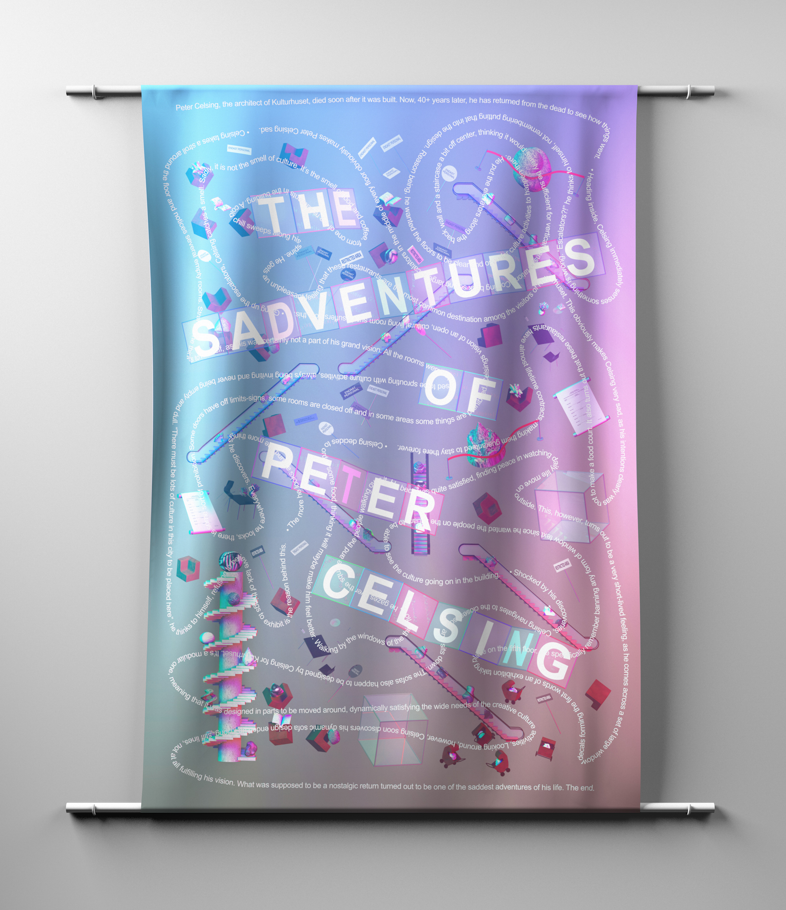
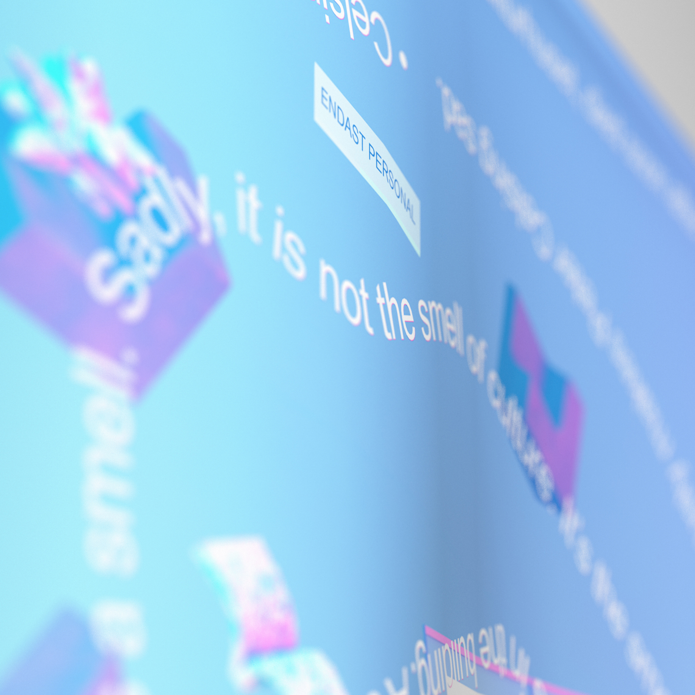
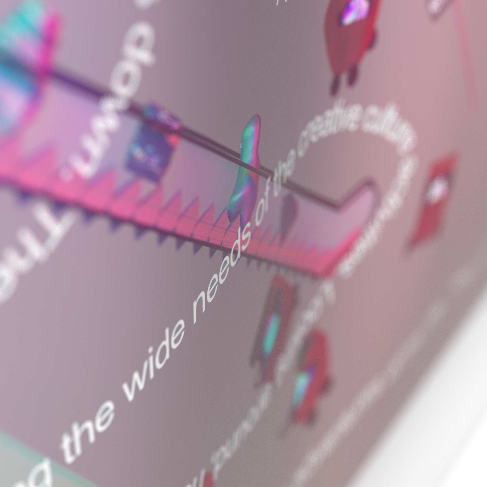

When designing Kulturhuset in Stockholm, architect Peter Celsing had a grand vision in mind.
The building, placed right in the middle of Stockholms bank quarters, was to act as an cultural force against the the commercialism.
As time have passed, however, more and more of Celsings original vision has faded from the actual building.
The Sadventures of Peter Celsing is a story-based poster/guide to the things of Kulturhuset that didn't really turn out as planned.
The Sadventures of Peter Celsing is a story-based poster/guide to the things of Kulturhuset that didn't really turn out as planned.


